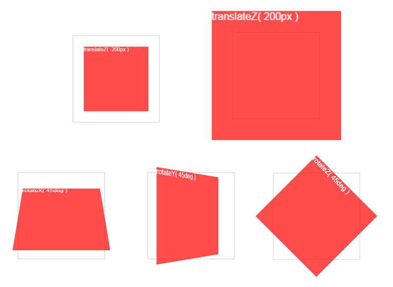
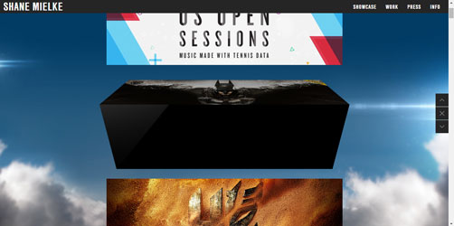
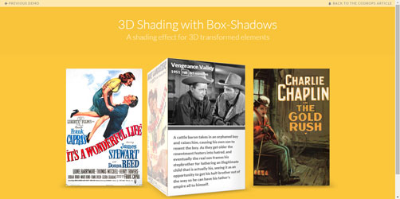
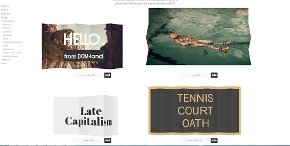
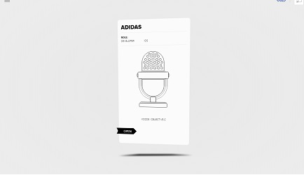
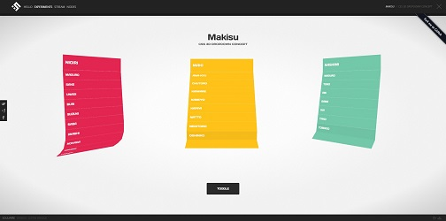
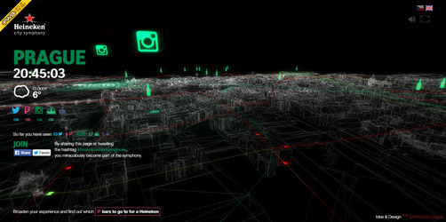
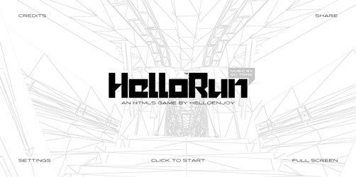
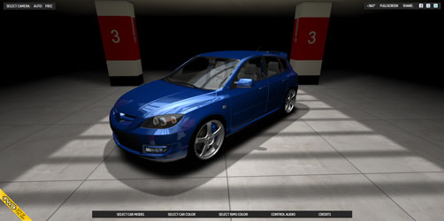
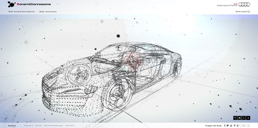

3D in web
From
to

CSS 3D
Group of stylesheet properties
- transform
- transform-origin
- transform-style
- perspective
- perspective-origin
- backface-visibility
CSS 3D
Transform properties
CSS 3D
CSS 3D
browser support
CSS 3D
Use cases / Web sites
    CSS 3D
Pros
- Easy to make
- Browser support
- GPU accelerated
- They look cool
- Tools for creating shapes tridiv.com
CSS 3D
Cons
- Slowing the page-rendering performance
- GPU acceleration can be expensive
WebGL
JavaScript API for rendering interactive 2D and 3D graphics inside an HTML element.
WebGL
Frameworks
- Three.js
- Voodoo.js
- Scene.js
- ...
WebGL syntax
var canvas;
var gl;
var cubeVerticesBuffer;
var cubeVerticesColorBuffer;
var cubeVerticesIndexBuffer;
var cubeVerticesIndexBuffer;
var cubeRotation = 0.0;
var cubeXOffset = 0.0;
var cubeYOffset = 0.0;
var cubeZOffset = 0.0;
var lastCubeUpdateTime = 0;
var xIncValue = 0.2;
var yIncValue = -0.4;
var zIncValue = 0.3;
var mvMatrix;
var shaderProgram;
var vertexPositionAttribute;
var vertexColorAttribute;
var perspectiveMatrix;
//
// start
//
// Called when the canvas is created to get the ball rolling.
//
function start() {
canvas = document.getElementById("glcanvas");
initWebGL(canvas); // Initialize the GL context
// Only continue if WebGL is available and working
if (gl) {
gl.clearColor(0.0, 0.0, 0.0, 1.0); // Clear to black, fully opaque
gl.clearDepth(1.0); // Clear everything
gl.enable(gl.DEPTH_TEST); // Enable depth testing
gl.depthFunc(gl.LEQUAL); // Near things obscure far things
// Initialize the shaders; this is where all the lighting for the
// vertices and so forth is established.
initShaders();
// Here's where we call the routine that builds all the objects
// we'll be drawing.
initBuffers();
// Set up to draw the scene periodically.
setInterval(drawScene, 15);
}
}
//
// initWebGL
//
// Initialize WebGL, returning the GL context or null if
// WebGL isn't available or could not be initialized.
//
function initWebGL() {
gl = null;
try {
gl = canvas.getContext("experimental-webgl");
}
catch(e) {
}
// If we don't have a GL context, give up now
if (!gl) {
alert("Unable to initialize WebGL. Your browser may not support it.");
}
}
//
// initBuffers
//
// Initialize the buffers we'll need. For this demo, we just have
// one object -- a simple two-dimensional cube.
//
function initBuffers() {
// Create a buffer for the cube's vertices.
cubeVerticesBuffer = gl.createBuffer();
// Select the cubeVerticesBuffer as the one to apply vertex
// operations to from here out.
gl.bindBuffer(gl.ARRAY_BUFFER, cubeVerticesBuffer);
// Now create an array of vertices for the cube.
var vertices = [
// Front face
-1.0, -1.0, 1.0,
1.0, -1.0, 1.0,
1.0, 1.0, 1.0,
-1.0, 1.0, 1.0,
// Back face
-1.0, -1.0, -1.0,
-1.0, 1.0, -1.0,
1.0, 1.0, -1.0,
1.0, -1.0, -1.0,
// Top face
-1.0, 1.0, -1.0,
-1.0, 1.0, 1.0,
1.0, 1.0, 1.0,
1.0, 1.0, -1.0,
// Bottom face
-1.0, -1.0, -1.0,
1.0, -1.0, -1.0,
1.0, -1.0, 1.0,
-1.0, -1.0, 1.0,
// Right face
1.0, -1.0, -1.0,
1.0, 1.0, -1.0,
1.0, 1.0, 1.0,
1.0, -1.0, 1.0,
// Left face
-1.0, -1.0, -1.0,
-1.0, -1.0, 1.0,
-1.0, 1.0, 1.0,
-1.0, 1.0, -1.0
];
// Now pass the list of vertices into WebGL to build the shape. We
// do this by creating a Float32Array from the JavaScript array,
// then use it to fill the current vertex buffer.
gl.bufferData(gl.ARRAY_BUFFER, new Float32Array(vertices), gl.STATIC_DRAW);
// Now set up the colors for the faces. We'll use solid colors
// for each face.
var colors = [
[1.0, 1.0, 1.0, 1.0], // Front face: white
[1.0, 0.0, 0.0, 1.0], // Back face: red
[0.0, 1.0, 0.0, 1.0], // Top face: green
[0.0, 0.0, 1.0, 1.0], // Bottom face: blue
[1.0, 1.0, 0.0, 1.0], // Right face: yellow
[1.0, 0.0, 1.0, 1.0] // Left face: purple
];
// Convert the array of colors into a table for all the vertices.
var generatedColors = [];
for (j=0; j<6; j++) {
var c = colors[j];
// Repeat each color four times for the four vertices of the face
for (var i=0; i<4; i++) {
generatedColors = generatedColors.concat(c);
}
}
cubeVerticesColorBuffer = gl.createBuffer();
gl.bindBuffer(gl.ARRAY_BUFFER, cubeVerticesColorBuffer);
gl.bufferData(gl.ARRAY_BUFFER, new Float32Array(generatedColors), gl.STATIC_DRAW);
// Build the element array buffer; this specifies the indices
// into the vertex array for each face's vertices.
cubeVerticesIndexBuffer = gl.createBuffer();
gl.bindBuffer(gl.ELEMENT_ARRAY_BUFFER, cubeVerticesIndexBuffer);
// This array defines each face as two triangles, using the
// indices into the vertex array to specify each triangle's
// position.
var cubeVertexIndices = [
0, 1, 2, 0, 2, 3, // front
4, 5, 6, 4, 6, 7, // back
8, 9, 10, 8, 10, 11, // top
12, 13, 14, 12, 14, 15, // bottom
16, 17, 18, 16, 18, 19, // right
20, 21, 22, 20, 22, 23 // left
]
// Now send the element array to GL
gl.bufferData(gl.ELEMENT_ARRAY_BUFFER,
new Uint16Array(cubeVertexIndices), gl.STATIC_DRAW);
}
//
// drawScene
//
// Draw the scene.
//
function drawScene() {
// Clear the canvas before we start drawing on it.
gl.clear(gl.COLOR_BUFFER_BIT | gl.DEPTH_BUFFER_BIT);
// Establish the perspective with which we want to view the
// scene. Our field of view is 45 degrees, with a width/height
// ratio of 640:480, and we only want to see objects between 0.1 units
// and 100 units away from the camera.
perspectiveMatrix = makePerspective(45, 640.0/480.0, 0.1, 100.0);
// Set the drawing position to the "identity" point, which is
// the center of the scene.
loadIdentity();
// Now move the drawing position a bit to where we want to start
// drawing the cube.
mvTranslate([-0.0, 0.0, -6.0]);
// Save the current matrix, then rotate before we draw.
mvPushMatrix();
mvRotate(cubeRotation, [1, 0, 1]);
mvTranslate([cubeXOffset, cubeYOffset, cubeZOffset]);
// Draw the cube by binding the array buffer to the cube's vertices
// array, setting attributes, and pushing it to GL.
gl.bindBuffer(gl.ARRAY_BUFFER, cubeVerticesBuffer);
gl.vertexAttribPointer(vertexPositionAttribute, 3, gl.FLOAT, false, 0, 0);
// Set the colors attribute for the vertices.
gl.bindBuffer(gl.ARRAY_BUFFER, cubeVerticesColorBuffer);
gl.vertexAttribPointer(vertexColorAttribute, 4, gl.FLOAT, false, 0, 0);
// Draw the cube.
gl.bindBuffer(gl.ELEMENT_ARRAY_BUFFER, cubeVerticesIndexBuffer);
setMatrixUniforms();
gl.drawElements(gl.TRIANGLES, 36, gl.UNSIGNED_SHORT, 0);
// Restore the original matrix
mvPopMatrix();
// Update the rotation for the next draw, if it's time to do so.
var currentTime = (new Date).getTime();
if (lastCubeUpdateTime) {
var delta = currentTime - lastCubeUpdateTime;
cubeRotation += (30 * delta) / 1000.0;
cubeXOffset += xIncValue * ((30 * delta) / 1000.0);
cubeYOffset += yIncValue * ((30 * delta) / 1000.0);
cubeZOffset += zIncValue * ((30 * delta) / 1000.0);
if (Math.abs(cubeYOffset) > 2.5) {
xIncValue = -xIncValue;
yIncValue = -yIncValue;
zIncValue = -zIncValue;
}
}
lastCubeUpdateTime = currentTime;
}
//
// initShaders
//
// Initialize the shaders, so WebGL knows how to light our scene.
//
function initShaders() {
var fragmentShader = getShader(gl, "shader-fs");
var vertexShader = getShader(gl, "shader-vs");
// Create the shader program
shaderProgram = gl.createProgram();
gl.attachShader(shaderProgram, vertexShader);
gl.attachShader(shaderProgram, fragmentShader);
gl.linkProgram(shaderProgram);
// If creating the shader program failed, alert
if (!gl.getProgramParameter(shaderProgram, gl.LINK_STATUS)) {
alert("Unable to initialize the shader program.");
}
gl.useProgram(shaderProgram);
vertexPositionAttribute = gl.getAttribLocation(shaderProgram, "aVertexPosition");
gl.enableVertexAttribArray(vertexPositionAttribute);
vertexColorAttribute = gl.getAttribLocation(shaderProgram, "aVertexColor");
gl.enableVertexAttribArray(vertexColorAttribute);
}
//
// getShader
//
// Loads a shader program by scouring the current document,
// looking for a script with the specified ID.
//
function getShader(gl, id) {
var shaderScript = document.getElementById(id);
// Didn't find an element with the specified ID; abort.
if (!shaderScript) {
return null;
}
// Walk through the source element's children, building the
// shader source string.
var theSource = "";
var currentChild = shaderScript.firstChild;
while(currentChild) {
if (currentChild.nodeType == 3) {
theSource += currentChild.textContent;
}
currentChild = currentChild.nextSibling;
}
// Now figure out what type of shader script we have,
// based on its MIME type.
var shader;
if (shaderScript.type == "x-shader/x-fragment") {
shader = gl.createShader(gl.FRAGMENT_SHADER);
} else if (shaderScript.type == "x-shader/x-vertex") {
shader = gl.createShader(gl.VERTEX_SHADER);
} else {
return null; // Unknown shader type
}
// Send the source to the shader object
gl.shaderSource(shader, theSource);
// Compile the shader program
gl.compileShader(shader);
// See if it compiled successfully
if (!gl.getShaderParameter(shader, gl.COMPILE_STATUS)) {
alert("An error occurred compiling the shaders: " + gl.getShaderInfoLog(shader));
return null;
}
return shader;
}
//
// Matrix utility functions
//
function loadIdentity() {
mvMatrix = Matrix.I(4);
}
function multMatrix(m) {
mvMatrix = mvMatrix.x(m);
}
function mvTranslate(v) {
multMatrix(Matrix.Translation($V([v[0], v[1], v[2]])).ensure4x4());
}
function setMatrixUniforms() {
var pUniform = gl.getUniformLocation(shaderProgram, "uPMatrix");
gl.uniformMatrix4fv(pUniform, false, new Float32Array(perspectiveMatrix.flatten()));
var mvUniform = gl.getUniformLocation(shaderProgram, "uMVMatrix");
gl.uniformMatrix4fv(mvUniform, false, new Float32Array(mvMatrix.flatten()));
}
var mvMatrixStack = [];
function mvPushMatrix(m) {
if (m) {
mvMatrixStack.push(m.dup());
mvMatrix = m.dup();
} else {
mvMatrixStack.push(mvMatrix.dup());
}
}
function mvPopMatrix() {
if (!mvMatrixStack.length) {
throw("Can't pop from an empty matrix stack.");
}
mvMatrix = mvMatrixStack.pop();
return mvMatrix;
}
function mvRotate(angle, v) {
var inRadians = angle * Math.PI / 180.0;
var m = Matrix.Rotation(inRadians, $V([v[0], v[1], v[2]])).ensure4x4();
multMatrix(m);
}
Three.js syntax
// declare a bunch of variable we will need later
var startTime = Date.now();
var container;
var camera, scene, renderer, stats;
var cube;
init();
animate();
function init() {
// test if webgl is supported
if ( ! Detector.webgl ) Detector.addGetWebGLMessage();
// create the camera
camera = new THREE.Camera( 70, window.innerWidth / window.innerHeight, 1, 1000 );
camera.position.z = 350;
// create the Scene
scene = new THREE.Scene();
// create the Cube
cube = new THREE.Mesh( new THREE.CubeGeometry( 200, 200, 200 ), new THREE.MeshNormalMaterial() );
// add the object to the scene
scene.addObject( cube );
// create the container element
container = document.createElement( 'div' );
document.body.appendChild( container );
// init the WebGL renderer and append it to the Dom
renderer = new THREE.WebGLRenderer();
renderer.setSize( window.innerWidth, window.innerHeight );
container.appendChild( renderer.domElement );
// init the Stats and append it to the Dom - performance vuemeter
stats = new Stats();
stats.domElement.style.position = 'absolute';
stats.domElement.style.top = '0px';
container.appendChild( stats.domElement );
}
// ## Animate and Display the Scene
function animate() {
// render the 3D scene
render();
// relaunch the 'timer'
requestAnimationFrame( animate );
// update the stats
stats.update();
}
// ## Render the 3D Scene
function render() {
// animate the cube
cube.rotation.x += 0.02;
cube.rotation.y += 0.0225;
cube.rotation.z += 0.0175;
// make the cube bounce
var dtime = Date.now() - startTime;
cube.scale.x = 1.0 + 0.3*Math.sin(dtime/300);
cube.scale.y = 1.0 + 0.3*Math.sin(dtime/300);
cube.scale.z = 1.0 + 0.3*Math.sin(dtime/300);
// actually display the scene in the Dom element
renderer.render( scene, camera );
}
Three.js
WebGL
Three.js
Renderers: WebGL, <canvas>, <svg>, CSS3D / DOM
Scenes, Cameras, Geometry, Lights, Materials, Shaders, Particles, Animation, Math Utilities, 3D Model Loaders
WebGL
Use cases / Web sites
   WebGL
Pros
- GPU accelerated
- Use Canvas/SVG
- Various librabies, most popular Three.js
- Easy to import 3D models (.obj, .collada)
WebGL
Cons
- Supported by IE11+
- waiting for Android ™ support